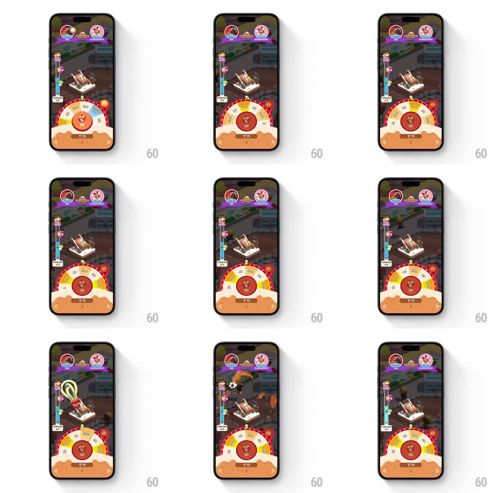

Media
Frame-by-frame

Rebuild this interaction 1:1: Monopoly Go's spin wheel - tapping spin whips the multiplier wheel around, it decelerates onto a segment, and a prize burst erupts from the board while the milestone track fills.

Rebuild this interaction 1:1: Monopoly Go's spin wheel - tapping spin whips the multiplier wheel around, it decelerates onto a segment, and a prize burst erupts from the board while the milestone track fills. ## Integration Integration: stack-agnostic spec - springs given as stiffness/damping, timed motions as duration + curve; map every value to your framework and animation library of choice. ## Scene The Monopoly Go board with a half-arc prize wheel at the bottom (segments with dice and multiplier values around a central spin button) and a vertical milestone track along the left edge with a progress fill and a gift marker. ## Motion spec Pattern: wheel spin with burst payoff, gesture-driven, ~2.5s spin. - Tapping the center button kicks the wheel to full speed (300ms spin-up), the segment values blurring past the top pointer. - The wheel decelerates over 1.8-2.2s (ease-out with a long tail), ticking segments under the pointer, and settles on the prize segment with a small bounce-back (2-3 degrees). - On landing, the pointer segment flashes and a burst erupts from the board's active building: the prize object (hammer, dice, cash) pops out (scale 0.2 to 1.4 to 1, spring stiffness 380 damping 14) with radiating streaks. - The milestone track's fill rises to the next notch (400ms, ease-out) and the gift marker pops if reached. ## Calibration - Deceleration is the drama: fast blur, visible ticking, one bounce at rest. - The burst comes from the board, not the wheel - the payoff lands on the city. ## Reduced motion Wheel rotates a quarter turn and stops; burst is a static pop. ## Don't miss - The spin button depresses on tap and stays disabled until the wheel rests. - The milestone fill animates after the burst, not during the spin.